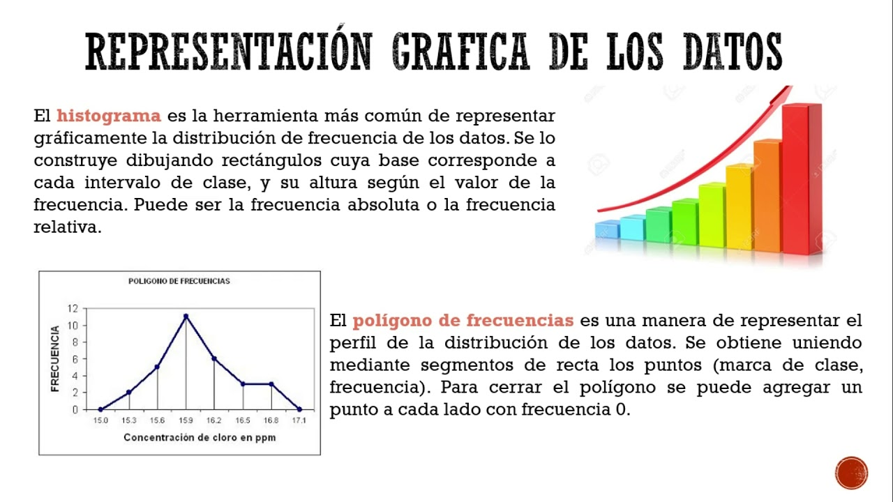

Representación Gráfica de Datos
La representación gráfica es una técnica clave en las estadísticas descriptivas para visualizar la distribución y las características de los datos. Entre los gráficos más comunes se encuentran los histogramas, los gráficos de barras y los diagramas de caja. Un histograma muestra la distribución de los datos en intervalos o "bins" y es útil para ver la forma general de la distribución. Los gráficos de barras son ideales para comparar cantidades entre diferentes categorías. Los diagramas de caja proporcionan una visión clara de la distribución, mediana, cuartiles y posibles valores atípicos en los datos. Estas representaciones visuales permiten una comprensión rápida y eficaz de los datos.
